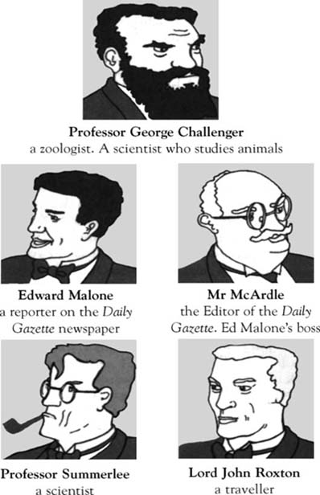
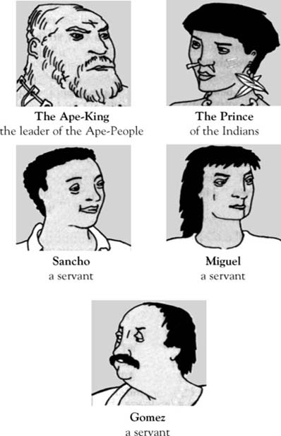

The Lost World
Sir Arthur Conan Doyle
trang trước
trang tiếp
Những Nhân Vật Trong Truyện
Listen to Part 1:
Your browser does not support the audio element.


Nội dung
Bìa sách
Trang tiêu đề
Trang thông tin bản quyền
Nội dung
Ghi chú về tác giả
Ghi chú về câu chuyện
Các nhân vật trong câu chuyện
1 Tôi gặp Giáo sư Challenger
2 Câu chuyện của Giáo sư
3 Bắt đầu hành trình
4 Sông Amazon
5 Sự việc khủng khiếp xảy ra
6 Sinh vật thời tiền sử
7 Cái chết trong màn đêm
8 Chuyến đi hãi hùng
9 Bị người vượn bắt làm tù binh
10 Trận chiến
11 Thoát khỏi Thế giới đã mất
12 Trở về London
Nội dung chính cần nắm
previous page
start
next page